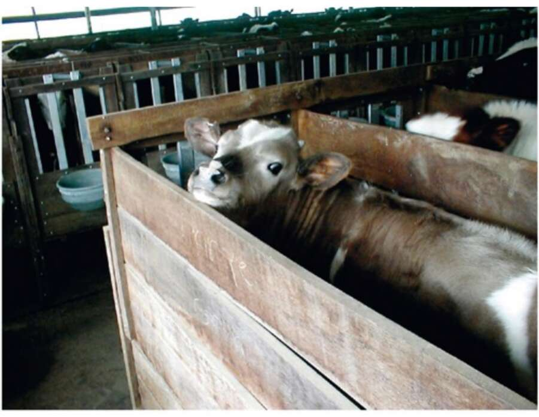

have taken great care of them, just as many slaveholders felt affection and concern for their slaves. It was no accident that kings and prophets styled themselves as shepherds and likened the way they and the gods cared for their people to a shepherd’s care for his flock. 15. A modern calf in an industrial meat farm. Immediately after birth the calf is separated from its mother and locked inside a tiny cage not much bigger than the calf’s own body. There the calf spends its entire life - about four months on average. It never leaves its cage, nor is it allowed to play with other calves or even walk — all so that its muscles will not grow strong. Soft muscles mean a soft and juicy steak. The first time the calf has a chance to walk, stretch its muscles and touch other calves is on its way to the slaughterhouse. In evolutionary terms, cattle represent one of the most successful animal species ever to exist. At the same time, they are some of the most miserable animals on the planet. Yet from the viewpoint of the herd, rather than that of the shepherd, its hard to avoid the impression that for the vast majority of domesticated animals, the Agricultural Revolution was a terrible catastrophe. Their evolutionary ‘success’ is meaningless. A rare wild rhinoceros on the brink of extinction is probably more satisfied than a
